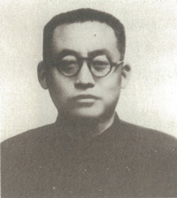
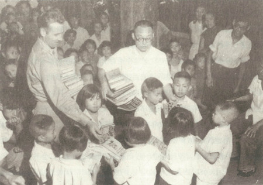
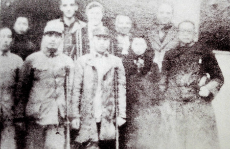

陶行知作诗宣传抗日

陶行知
陶行知不仅是伟大的教育家，还是抗日战争时期著名的大众化诗人，他所作的诗歌易懂易唱，深受群众喜欢。1939年2月底，陶行知来到重庆北碚，开始了他为期7年的抗日宣传。
陶行知说他不懂诗，是谦虚，说他的诗是打仗的“号筒”，那是千真万确。他曾在《诗人》一诗中写道：
有人说我是诗人，
我可不懂，唱破了喉咙，
无非是打仗的号筒，
只叫斗士向前冲。
在北碚期间，陶行知确实唱破了“喉咙”。抗战时期他留下的诗作，就占其一生诗作的1/10。这些诗每一首都是战斗的号角，是对日本侵略者的口诛笔伐，它们唱出了人民的心声，激发了抗战的斗志，更鼓舞了战士们的雄心。
陶行知初到北碚时，发现“小先生”很活跃，传习活动很普遍，便抓紧时机，利用这股力量开展抗日救亡宣传，把传习、宣传和动员志愿兵紧密结合起来，收到了显著效果。1939年春天，他在北碚的第一首儿童诗中，就这样写道：
站起来，抗日的小孩！
长起来，抗日的小孩！
联起来，抗日的小孩！
我们要帮助大人，
把东洋的妖怪赶开！
赶出关外，赶出海外，
叫他们知道我们的厉害，
我们是抗日的小孩！

陶行知与孩子们在一起。图为1945年7月，陶行知与美国友人一起，把美国援华联合会捐赠的图书发给孩子们。在动员志愿兵的活动中，通俗读物编刊社16岁的工作人员刘凯，志愿参军。他母亲知道后，为儿子披红放火炮，鼓励儿子英勇杀敌。陶行知满腔热情歌颂刘大娘，他在《大娘歌》里写道：
说端详，听端详，再说四川刘大娘。
大娘儿子叫刘凯，大娘住在歇马场。
刘凯投效志愿军，事先没有禀告娘。
一日大娘到黄桷，看见军队游行忙。
队中有人似相识，细看居然是儿郎。
打听才知北碚事，召集壮丁打扶桑。
儿子已把身许国，为母心中喜洋洋。
东街买得大红布，西街买得火炮放。
老娘为儿亲挂彩，火炮响彻嘉陵江。
挂彩放炮为什么？恭喜吾儿打胜仗。
三峡五百老太太，好比人间活罗汉。
苦口婆心劝出征，大娘立了好榜样。
华蓥壮士奋臂起，土匪婆要跟着干。
好男如今爱当兵，贤母争学刘大娘。

1943年，陶行知（右一）与荣军代表合影。
经过八年艰苦的抗日战争，中国人民打败了日本侵略者。在长期的战斗中，有许多人牺牲了性命，许多人负伤致残。这些荣誉军人们的生活艰难，但国民党却不理不管，他们只有自己组织起来，走互助的道路。1945年抗战胜利后，9月4日陶行知参加了“荣军互助社”成立大会。他号召荣誉军人，“打了胜仗还不够，我们还要和平建国。政治不民主得不到和平，建国就难以成功。所以，民主是中国的救命仙丹。因此，中国每一个人都要学习民主，为实现民主而努力。”在会上他发表了热情洋溢的《祝词》：
荣誉英雄，精神可佩。
万年古国，靠你保卫。
废而不残，心中惭愧。
残而不废，人中宝贵。
唤醒民国，不可再睡。
保障和平，不可推诿。
奋斗到顶，不许倒退。
争取民主，如鱼需水。
各得其所，人才有味。
天下为公，人民万岁！